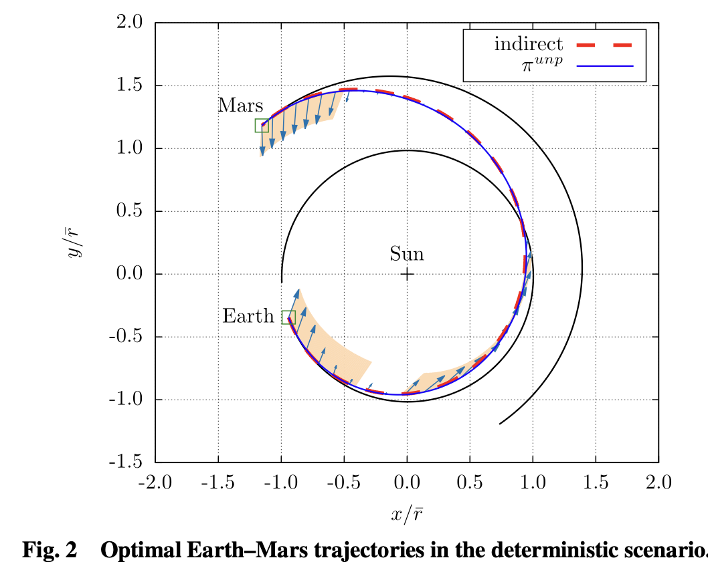
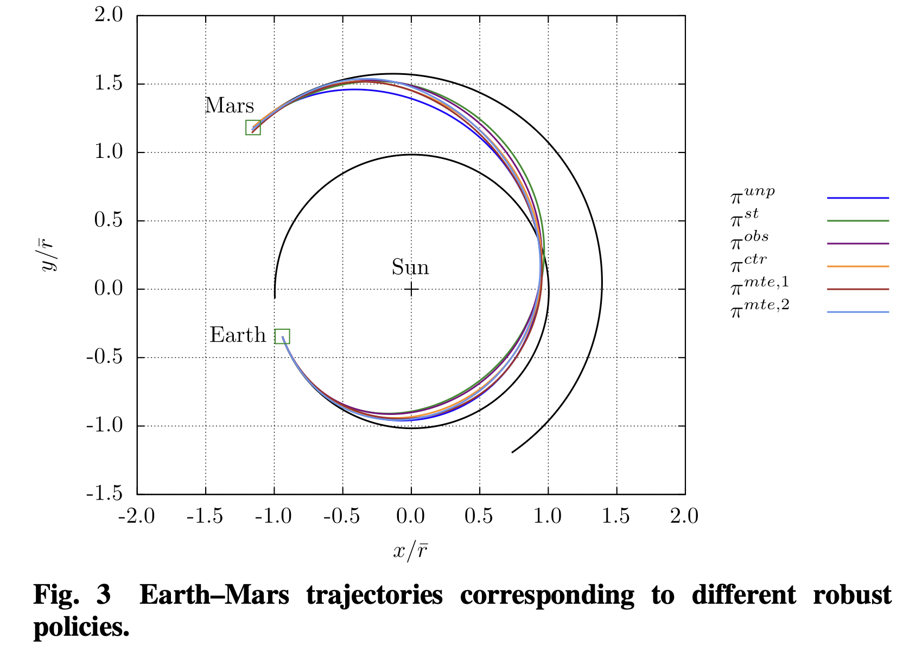
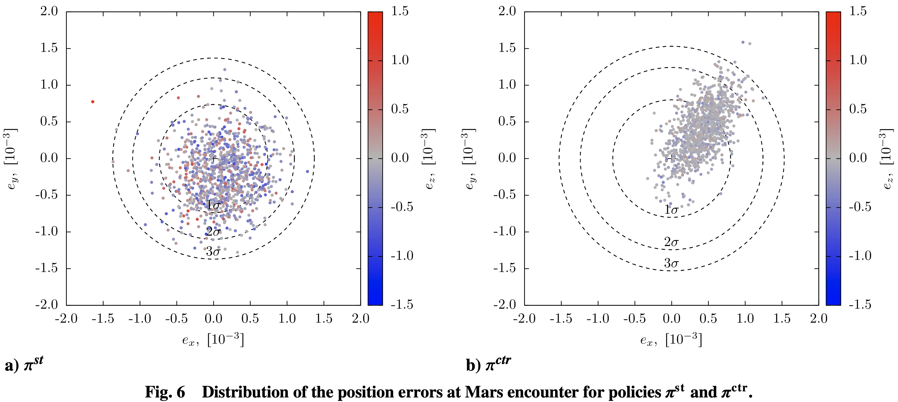

This post takes the paper “Reinforcement Learning for Robust Trajectory Design of Interplanetary Missions” authored by Zavoli et al. as a launch pad and digs into how a Proximal Policy Optimization (PPO) agent can produce closed-loop low-thrust guidance that remains effective even when the world deviates from the ideal textbook case— e.g., navigation noise, thrust pointing/magnitude errors, and even missed thrust events (MTEs) for multiple guidance steps.
Compared to a traditional trajectory design report, this blog format adds interactive widgets and animations to build intuition about the algorithmic pieces (e.g., PPO’s clipped objective) and the induced guidance behaviors (e.g., spreading thrust margins in anticipation of failures).
- Mission setup & motivation
- Problem setup & why robustness matters
- From physics to a POMDP
- How PPO is used here
- Tightening constraints with an ε-schedule
- Implementation knobs
- PPO hyperparameters & schedules
- Interactive: Tree-Structured Parzen Estimator (TPE)
- Network architecture (actor)
- Interactive: PPO objective & burn schedules
- Results and takeaways
- Figures from the paper
- Monte-Carlo results
- Compute & reproducibility
- Limitations & next steps
- References & resources
Mission setup & motivation
The case study is a time-fixed Earth→Mars rendezvous under Sun gravity, modeled as an $N=40$-step sequence of impulses (Sims–Flanagan-like discretization). Each step is roughly nine days. The goal is to maximize final mass while meeting terminal constraints on Mars-relative position and velocity. Uncertainties are injected as: (i) state/disturbance noise, (ii) observation (navigation) noise, (iii) thrust execution errors (small-angle pointing + magnitude), and (iv) single- or multi-step missed thrust events.
Why a learned feedback law? In uncertain environments, open-loop optimal plans can erode quickly. A compact neural policy mapping observations to $\Delta v$ provides onboard closed-loop guidance that adapts on the fly—without re-solving an optimal control problem in flight.
Problem setup & why robustness matters
Picture a small spacecraft leaving Earth, arcing around the Sun on a transfer toward Mars. Every few days a guidance computer decides whether to fire the thruster—just a nudge—or to coast. The mission isn’t only about getting there; it’s about arriving on target with as much propellant left as possible. This post studies a time-fixed Earth→Mars rendezvous, discretized into \(N=40\) decision steps (about nine days each). The objective is to maximize final mass while meeting terminal constraints on Mars-relative position and velocity, despite four uncertainty sources: (i) state/disturbance noise, (ii) observation (navigation) noise, (iii) execution errors (small pointing/magnitude errors), and (iv) single- or multi-step missed-thrust events (MTEs).
Why a learned feedback law? Open-loop optimal plans can erode quickly under noise and execution errors. A compact neural policy mapping observations to \( \Delta v \) delivers closed-loop guidance that adapts on the fly—without re-solving an optimal control problem in flight.
From physics to a POMDP
The guidance problem is cast as a Partially Observable Markov Decision Process (POMDP) so the policy can react to noisy navigation and imperfect actuation.
State, observations, actions, dynamics.
$$ s_{k+1} = f\!\big(s_k,\; u_k,\; \omega^{(s)}_{k+1}\big) $$ $$ o_k = h\!\big(s_k,\; t_k,\; \omega^{(o)}_k\big), \qquad a_k = \pi_\theta(o_k), \qquad u_k = g\!\big(a_k,\; \omega^{(a)}_k\big) $$Reward and objective.
$$ R_k \;=\; -\mu_k \;-\; \lambda_{eu}\,e_{u,k} \;-\; \lambda_{es}\,e_{s,k} $$ $$ J(\theta) \;=\; \mathbb{E}_{\tau\sim \pi_\theta}\!\left[\sum_{k=0}^{N-1}\gamma^k\,R_k\right] $$How PPO is used here
This section builds from the objective to the exact PPO loss used by the authors (Zavoli & Federici). Explanations avoid “we” and emphasize the intuition behind each step.
1) Goal
The aim is to learn parameters \( \theta \) that maximize discounted return:
$$ J(\theta) \;=\; \mathbb{E}\!\left[\sum_{k=0}^{N-1}\gamma^k\,R_k\right] $$2) Policy-gradient with an advantage baseline
Using the log-derivative trick and a baseline gives an estimator that scales with advantage \( \hat A_k \) (how much better an action was than typical in that state):
$$ \nabla_\theta J(\theta)\;=\;\mathbb{E}\!\left[\sum_k \nabla_\theta \log \pi_\theta(a_k|s_k)\;\hat A_k\right] $$Here \( \hat A_k \) is computed from value estimates (GAE is used to reduce variance), \( \hat A_k \approx Q^\pi(s_k,a_k) - V^\pi(s_k) \).
3) Proximal update via clipping
To avoid destructive parameter jumps, PPO uses the probability ratio \( r_k(\theta)=\tfrac{\pi_\theta(a_k|s_k)}{\pi_{\theta_{\text{old}}}(a_k|s_k)} \) and clips it to stay within \( [\,1-\epsilon,\;1+\epsilon\,] \):
$$ J^{\text{clip}}(\theta)=\mathbb{E}\!\left[\frac{1}{N}\sum_k \min\!\big(r_k\,\hat A_k,\; \operatorname{clip}(r_k,1-\epsilon,1+\epsilon)\,\hat A_k\big)\right] $$Intuition: if \( \hat A_k>0 \) and the new policy pushes \( r_k \) above \( 1+\epsilon \), the objective stops increasing—preventing an overly large update.
4) Full PPO objective
PPO augments the clipped term with a value-regression loss and an entropy bonus:
$$ J^{\text{ppo}}(\theta) \;=\; J^{\text{clip}}(\theta)\;-\; c_1\,H(\theta) \;+\; c_2\,S(\theta) $$where
$$ H(\theta)=\frac{1}{N}\sum_k \big(V_\theta(s_k)-\hat G_k\big)^2,\qquad S(\theta)=\frac{1}{N}\sum_k \mathbb{E}_{a\sim \pi_\theta(\cdot|s_k)}[-\log \pi_\theta(a|s_k)] $$The authors linearly decay both the clip range \( \epsilon \) and learning rate during training to stabilize updates.
5) Paper-specific implementation - What was actually used?
- Observations: noisy \((\mathbf r,\mathbf v,m)\) and a time/step index; channels are normalized to natural scales (e.g., 1 AU).
- Actions: 3-D impulsive \( \Delta\mathbf v \) sampled from a Gaussian and projected to a per-step magnitude bound set by thrust/mass.
- Dynamics & uncertainty: two-body propagation with impulses; state/observation/control noise; single- and multi-step missed-thrust events.
- Reward: \( R_k = -\mu_k - \lambda_{eu}e_{u,k} - \lambda_{es}e_{s,k} \) with a two-stage \( \varepsilon \)-schedule on the terminal tolerance (loose early for exploration, tight later for accuracy). This curriculum was the most impactful trick reported by the authors.
- Networks: separate actor/critic MLPs (tanh). Hidden widths follow the paper’s heuristic (e.g., \( h_1=10n_{in},\; h_2=\sqrt{h_1h_3},\; h_3=10n_{out} \)); compact enough for on-board inference.
- Optimization: Learning rate and clip-range decay linearly, several epochs used per update and periodic Monte-Carlo evaluation are done which returns the best-performing checkpoint.
Tightening constraints with an $\varepsilon$-schedule
Reward shaping can accidentally encourage hacks. Here, a simple idea helps: start training with a looser terminal tolerance $\varepsilon$ so the policy learns to make progress, then tighten $\varepsilon$ halfway through training. This acts like curriculum learning for constraints and empirically stabilizes training.
At a high level, the per-step reward is of the form
$\displaystyle R_k = -\mu_k - \lambda_{\mathrm{eu}}\,e_{u,k-1} - \lambda_{\mathrm{es}}\,\max(0, e_{s,k} - \varepsilon)$
where $\mu_k$ is normalized fuel use, $e_{u,k}$ penalizes exceeding stepwise $\|\Delta v\|$ bounds, and $e_{s,N}$ penalizes terminal position/velocity error.
What made it work: implementation “knobs”
- Curriculum via an ε-schedule: start with looser terminal tolerances so the agent learns to make progress, then tighten mid-training.
- Normalization: nondimensionalize states and rewards to stabilize training and help generalization across scales.
- Policy/value nets: compact MLPs are sufficient here; actor outputs a mean and std for a Gaussian over Δv within per-step bounds.
- Optimization: linearly decay learning rate and clip range; tune with a lightweight search; keep batch/mini-batch sizes consistent with on-policy PPO.
These small choices add up: together with the ε-schedule they noticeably improved stability and final performance in my presentation experiments.
PPO hyperparameters
| Hyperparameter | Value | Eligibility / search space |
|---|---|---|
| Discount factor \( \gamma \) | 0.9999 | {0.9, 0.95, 0.98, 0.99, 0.999, 0.9999, 1.0} |
| GAE factor \( \lambda \) | 0.99 | {0.8, 0.9, 0.92, 0.95, 0.98, 0.99, 1.0} |
| Initial learning rate \( \alpha_0 \) | \(2.5\times 10^{-4}\) | \([1\times10^{-5},\,1]\) (log-uniform) |
| Initial clip range \( \varepsilon_0 \) | 0.3 | {0.1, 0.2, 0.3, 0.4} |
| Value-loss coeff \( c_1 \) | 0.5 | {0.5, 1.0, 5.0} |
| Entropy coeff \( c_2 \) | \(4.75\times10^{-8}\) | \([1\times10^{-8},\,0.1]\) (log-uniform) |
| SGD epochs per update \( n_{\text{opt}} \) | 30 | {1, 5, 10, 20, 30, 50} |
Linear schedules used during training
Both the learning rate and the clip range are decayed linearly over the total training step budget \(T\):
$$ \alpha(t) = \alpha_0\!\left(1 - \frac{t}{T}\right), \qquad \varepsilon(t) = \varepsilon_0\!\left(1 - \frac{t}{T}\right). $$Early training benefits from larger steps and wider exploration; as convergence nears, shrinking the step size \( \alpha(t) \) and the effective trust region via smaller \( \varepsilon(t) \) reduces variance and prevents policy collapse—practically a progressively tighter KL budget.
How these were tuned using Optuna's Tree-Structured Parzen Estimator (TPE)
Hyperparameters were tuned once on a deterministic (unperturbed) mission scenario using Optuna’s TPE (link in resources below) with a budget of 500 trials and a cap of \(2.4\times10^6\) training steps per trial. Categorical knobs (e.g., \( \gamma,\ \lambda,\ \varepsilon_0 \)) were searched over the finite sets in the table; scale-sensitive knobs (e.g., \( \alpha_0,\ c_2 \)) were sampled log-uniformly. Periodic Monte-Carlo evaluation (100 runs) promoted the best checkpoint found so far. See the exact Optuna library reference in References & resources.
What the Tree-Structured Parzen Estimator (TPE) is doing
TPE models \(p(x \mid y)\) instead of \(p(y \mid x)\) for a hyperparameter vector \(x\) and an observed score \(y\) (e.g., final return). Trials are split by a threshold \( y^\star \) (top-\( \gamma \) fraction). Two Parzen density models are fit:
$$ \ell(x) \;=\; p(x \mid y \le y^\star) \;\approx\; \sum_{i\in \mathcal{G}} w_i\,\mathcal{K}(x;\,x_i,\sigma_i), \qquad g(x) \;=\; p(x \mid y > y^\star) \;\approx\; \sum_{i\in \mathcal{B}} w_i\,\mathcal{K}(x;\,x_i,\sigma_i), $$where \( \mathcal{K} \) is a Parzen kernel (Gaussian for continuous variables; smoothed categorical kernels otherwise). The next suggestion maximizes a proxy for expected improvement:
$$ x_{\text{next}} \;=\; \arg\max_x \frac{\ell(x)}{g(x)}. $$In simple words, the “promisingness” of a candidate is \( \displaystyle \frac{p(x\mid\text{good})}{p(x\mid\text{bad})} \). See the Optuna TPE entry in References & resources.
Interactive: Tree-Structured Parzen Estimator “promisingness”
TPE chooses the next trial by sampling where the ratio of Parzen densities over the “good” and “bad” regions is largest.
Network architecture & sizing (actor)
The paper uses separate heads for actor (control policy) and critic (value function). With \(n_{\text{in}}=8\) (namely position and velocity, mass and time),
the actor outputs \(n_{\text{out}}^{\text{act}}=3\) (Δv in 3 axes) and the critic \(n_{\text{out}}^{\text{crit}}=1\) (scalar value).
All hidden layers use tanh and the output layers are linear. Both the actor and critic network uses three hidden layers sized by the paper’s heuristic:
Default below shows \(n_{\text{in}}=1\), \(n_{\text{out}}=3\) → 1–10–18–30–3.
Interactive: PPO clipped objective
The PPO update multiplies the advantage by a probability ratio $r(\theta)=\pi_\theta(a|s)/\pi_{\theta_{\text{old}}}(a|s)$ and clips $r$ to $[1-\epsilon,\,1+\epsilon]$. Explore how clipping limits the update when advantages are large.
Burn schedules by training uncertainty
Click a case to show the paper’s per-step \( \|\Delta \mathbf v\| \) profile (40 steps). Captions interpret the pattern.
Results and takeaways
What the trained policies actually do
- Near-optimal when clean: In unperturbed tests, the learned policy’s final mass is comparable to an indirect optimal method—evidence that PPO didn’t sacrifice too much efficiency to gain robustness.
- Robustness trade: With state/obs/control noise, the policy favors earlier partial corrections and avoids saturating $\|\Delta v\|$—leaving breathing room near rendezvous.
- MTEs are toughest: Multi-step missed-thrust episodes (late in the trajectory) degrade success rates most, motivating either more conservative policies or training curricula that include families of failure models.
In clean (deterministic) tests without uncertainty the learned policy achieved final mass on par with an indirect optimal method (≈606 vs 604 kg), while under uncertainty it trades a little extra propellant for higher success—particularly by spreading thrust and reserving margin before the last steps. Single-step MTEs are challenging since they introduce potentially larger deviations from the course which then have to be recovered at an inopportune or less efficient location. This problem is further excarbated when considering multi-step MTEs which are the hardest (as would also be expected in real life).
In short: PPO learns a feedback guidance law that is adaptive and anticipatory. You can see “margin management” behavior emerge—something that’s hard to encode directly with classical optimal control.
Figures from the paper — what they show



| Uncertainty | Parameter | Value |
|---|---|---|
| State | σr,s (km) | 1.0 |
| σv,s (km/s) | 0.05 | |
| Observation | σr,o (km) | 1.0 |
| σv,o (km/s) | 0.05 | |
| Control | σϕ (°) | 1.0 |
| σϑ (°) | 1.0 | |
| σψ (°) | 1.0 | |
| σu (—) | 0.05 | |
| Single-step MTE | pmte, nmte | 0, 1 |
| Multiple-step MTE | pmte, nmte | 0.1, 3 |
- State noise:
σr,s(km),σv,s(km/s) — process/disturbance on dynamics. - Observation noise:
σr,o(km),σv,o(km/s) — navigation/measurement error. - Control errors: pointing
σφ,σϑ,σψ(deg); magnitudeσu(fractional, e.g., 0.05 = 5%). - Missed-thrust events (MTE):
pmte= per-step miss probability;nmte= consecutive missed burns. - All
σare 1-σ (Gaussian). Units: km, km/s, deg; probabilities unitless.
Monte-Carlo results
| Policy | \(m_f\) mean [kg] | \(m_f\) std | \(e_r\) mean \([\times 10^{-3}]\) | \(e_r\) std | \(e_v\) mean \([\times 10^{-3}]\) | \(e_v\) std | SR [%] |
|---|---|---|---|---|---|---|---|
| \(\pi^{unp}\) | 606.34 | – | 0.25 | – | 0 | – | 100 |
| \(\pi^{st}\) | 581.34 | 8.41 | 0.63 | 0.25 | 0.022 | 0.15 | 91.5 |
| \(\pi^{obs}\) | 582.50 | 9.34 | 0.66 | 0.26 | 0.044 | 0.26 | 89.1 |
| \(\pi^{ctr}\) | 590.61 | 0.80 | 0.66 | 0.32 | 0.016 | 0.12 | 84.4 |
| \(\pi^{mte,1}\) | 583.55 | 7.12 | 0.76 | 0.57 | 0.10 | 0.47 | 81.9 |
| \(\pi^{mte,2}\) | 573.88 | 4.22 | 1.09 | 1.27 | 0.46 | 2.49 | 62.8 |
\(m_f\): final mass; \(e_r\), \(e_v\): terminal position/velocity errors (scaled); SR: success rate.
\(\pi^{unp}\) values are from the deterministic overview (Table 4 in the paper).
Table 5 in the paper also reports the tolerance \(\varepsilon_B\) needed to reach 1σ/2σ/3σ success.
Limitations & next steps
- Impulse model: \(N=40\) impulses is coarse for true low-thrust flight; a finite-thrust propagator is the natural upgrade.
- Environment realism: the MTE training setups always include at least one miss, which can overfit policies to that specific failure pattern; broader failure families would improve generality.
- Verification: results rely on Monte-Carlo success; formal guarantees (e.g., robust tubes or reachability) would increase trust.
A compelling direction is to embed this robust leg solver inside a multi-gravity-assist (MGA) designer used for deepspace missions. Use a global search to pick sequences and epochs, then call the RL policy to realize each leg robustly. One such algorithm with which it could easily be combined to achieve a robust and fuel vs time balancing MGA trajectory is my master thesis project. For context and future work ties, see: my master’s thesis and the MGA trajectory-optimization project on the research page.
Compute & Reproducibility
Training follows a two-phase loop:
- Policy rollout. Run the current policy \( \pi_\theta \) in
nenvparallel environments fornbepisodes of length \(N\), collecting on-policy trajectories \( \{\tau_i\}\). - Policy update. For each update, optimize the PPO loss for
noptepochs over mini-batches drawn from those fresh trajectories only.
With total training steps \(T\), the number of updates is $$ N_{\text{upd}} \;=\; \frac{T}{\,n_{\text{env}}\, n_b\, N\,}. $$
- \(N=40\) steps/episode (≈9 days/step).
- \(n_{\text{env}}=8\) parallel envs; \(n_b\in\{8,16,32\}\) depending on the policy (see Table 4 of the paper for the exact setting).
- \(n_{\text{opt}}=30\) PPO epochs/update; GAE with \(\gamma=0.9999\), \(\lambda=0.99\).
- Linear schedules: \( \alpha(t)=\alpha_0\!\left(1-\tfrac{t}{T}\right), \ \epsilon(t)=\epsilon_0\!\left(1-\tfrac{t}{T}\right)\) with \(\alpha_0=2.5\times 10^{-4}\), \(\epsilon_0=0.3\).
- Periodic Monte-Carlo eval (100 runs) every \(4\times 10^4\, n_{\text{env}}\) steps; keep the best checkpoint.
A strong student desktop can reproduce the runs: the authors report ~\(2\times 10^8\) steps in ≈12 hours on an 8-core i7-9700K with 8 envs. Exact per-policy settings (e.g., \(n_{\text{env}}, n_b\)) are in Table 4 of the paper, and the full code is available on GitHub: LorenzoFederici/RobustTrajectoryDesignbyRL.
References & resources
- Zavoli, A., & Federici, L. (2021). Reinforcement Learning for Robust Trajectory Design of Interplanetary Missions. Journal of Guidance, Control, and Dynamics, 44(8), 1440–1455. DOI: 10.2514/1.G005794
- Gaudet, B., Linares, R., & Furfaro, R. (2020). “Deep Reinforcement Learning for Six Degree-of-Freedom Planetary Landing.” Advances in Space Research, 65(7), 1723–1741. https://doi.org/10.1016/j.asr.2019.12.030
- Schulman, J., Wolski, F., Dhariwal, P., Radford, A., & Klimov, O. (2017). “Proximal Policy Optimization Algorithms.” arXiv: 1707.06347
- Optuna TPE sampler documentation: optuna.samplers.TPESampler
- My presentation on the original paper in the ASEN 6519 course: PDF slides